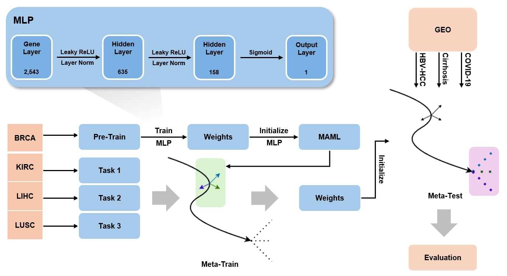

|
Ganghui Yi I'm a M.S. student in Computer Science at the University of Southern California. Previously, I conducted research on few-shot learning for disease prediction and biomarker discovery at the Bioinformatics and Machine Learning Lab, where I was fortunate to be advised by Prof. Kyuri Jo. Currently, I work on multimodal learning for precision medicine and de novo TCR–pMHC binder design for immunotherapy. I received my bachelor’s degree with honors from Sogang University in Seoul, where I double majored in Computer Science and Life Science. During my undergraduate studies, I also participated in an exchange program at Case Western Reserve University. |

|
ResearchMy research interests are AI for healthcare, precision medicine, and drug discovery. |
|

|
Few-Shot Learning for Multi-Omics Disease Classification with a MAML-Based
Model
Ganghui Yi, Jeongjin Ju, Kyuri Jo KTSDE (KIPS Transactions on Software and Data Engineering), 2025 project page / PDF MAML-based few-shot learning model for multi-omics disease classification enables superior performance in low-data settings across COVID-19, Cirrhosis, and HBV-HCC. |
Miscellanea |
 |
I'm into film photography. My main gear is Nikon FE2 with 35mm(mainly) and 50mm. Although my name might sound Chinese, I'm actually Korean—but fun fact, I did live in China for five years! |
|
Website template by Jon Barron |